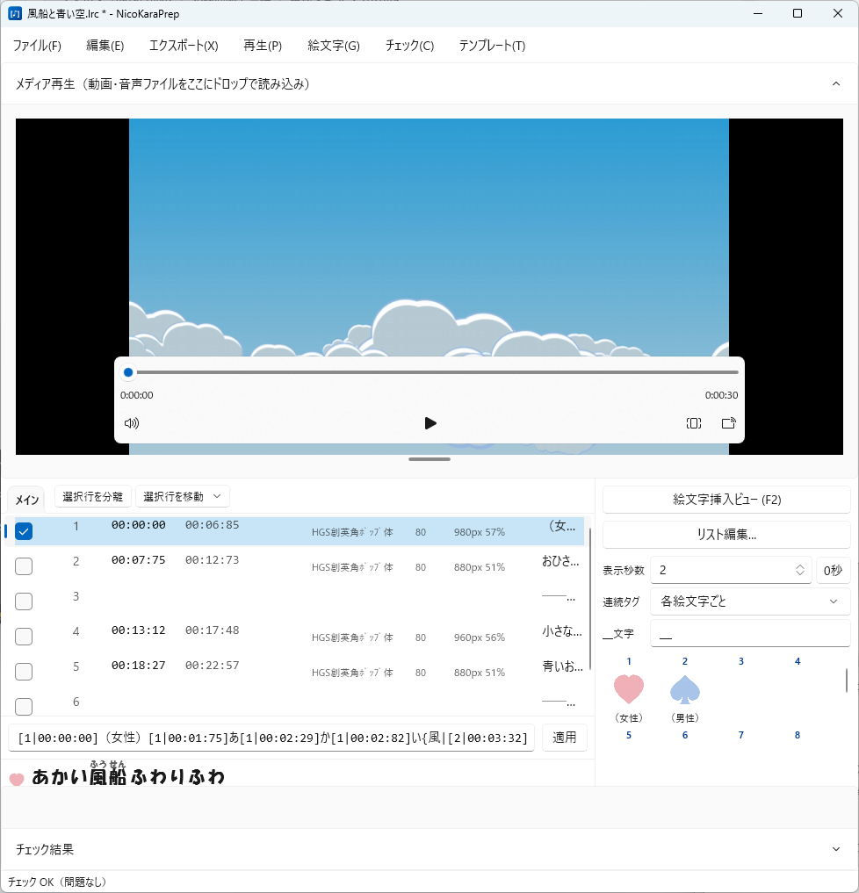
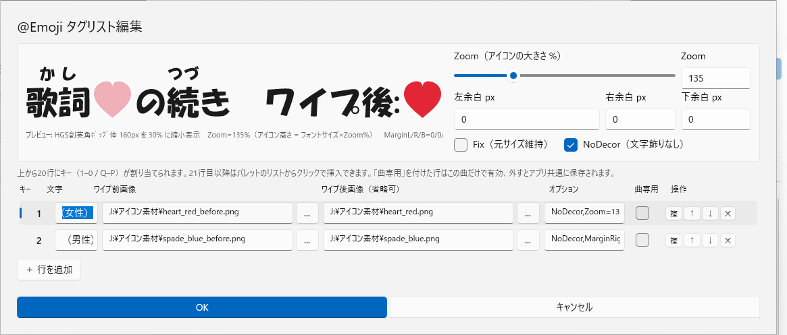
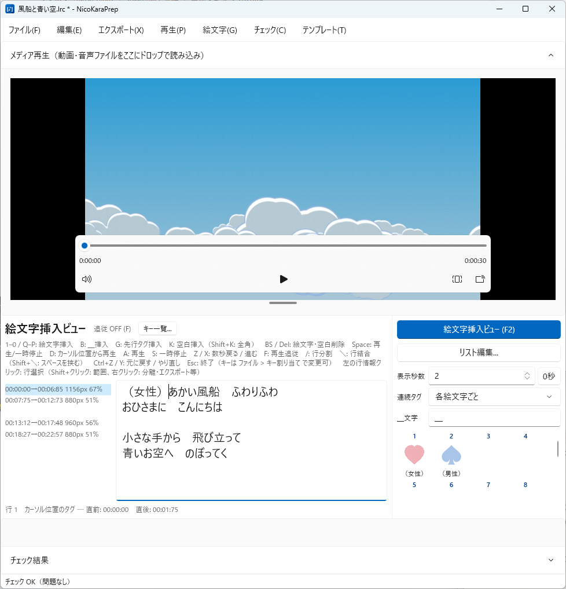
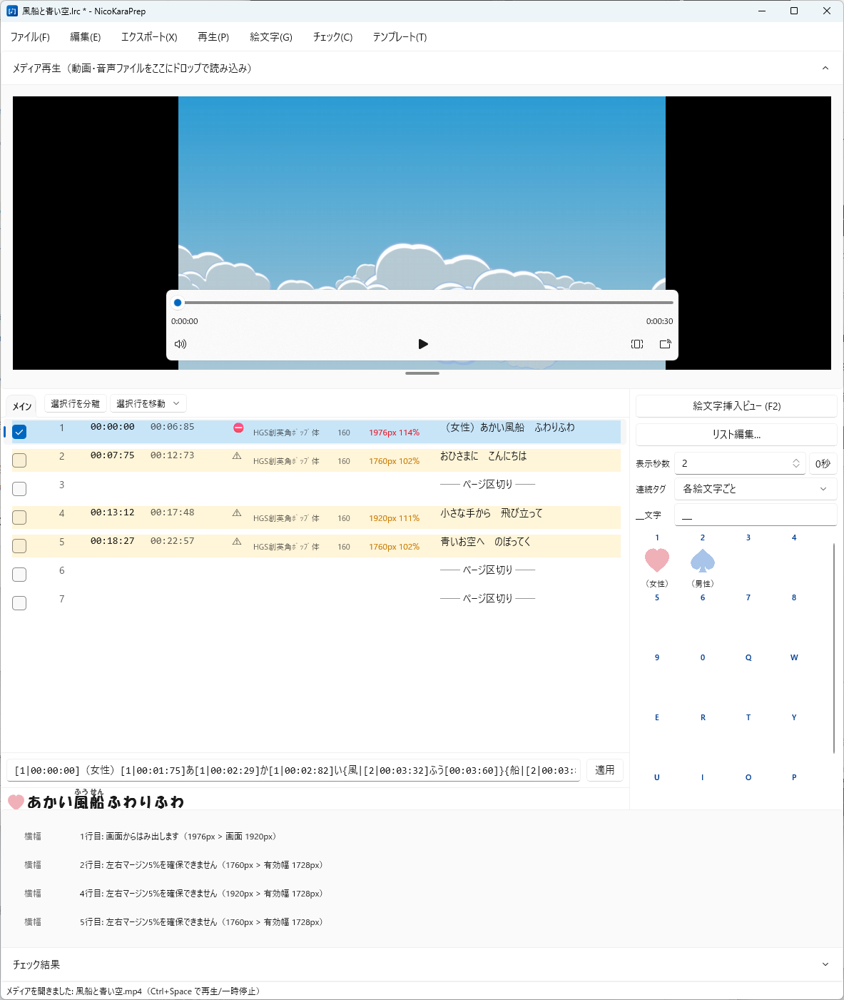
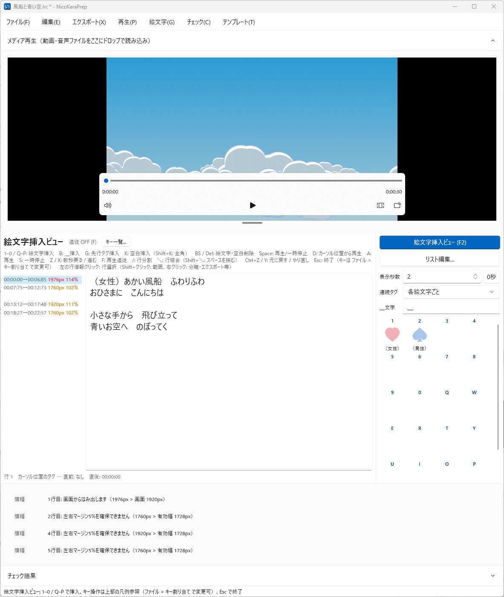

1. インストールと起動
- 最新版の zip をダウンロードし、任意の場所へ展開します
NicoKaraPrep.exeをダブルクリックで起動します（インストール作業は不要です）
- 対応 OS: Windows 10 / 11（64bit）
- 設定は
%APPDATA%\NicoKaraPrep\settings.jsonに保存されます（アプリフォルダは汚しません） - 前回終了時のウィンドウ位置・サイズで起動します
- Microsoft Store 版は配信準備中です。公開までは上記の zip をご利用ください
2. 基本の流れ（クイックスタート）
はじめて使うときの手順です。RhythmicaLyrics でタイムタグを打ち終えた歌詞ファイルと、ニコカラメーカー3 のプロジェクトが手元にある状態から始めます。
1. 歌詞ファイル（.rlf）を開く
- ファイル > 開く、または画面へドラッグ＆ドロップします。RhythmicaLyrics の編集ファイル
.rlfを開くのが基本です（保存も rlf のままなので、RhythmicaLyrics との行き来ができます） - タイムタグ付きの
.lrcも開けます。RhythmicaLyrics の「テキスト編集モード」のテキストは ファイル > クリップボードから貼り付け（Ctrl+Shift+V）でも読み込めます - 2 回目以降は ファイル > 最近使用したファイル からすぐ開けます
2. ニコカラメーカーの設定を取り込む
チェック > ニコカラメーカーのプロジェクト(n3proj)から設定を読み込み で .n3proj を選びます（画面へドラッグ＆ドロップでも可）。
- 取り込むのはこの曲用にフォント・文字サイズ・画面サイズを設定したあとのプロジェクトです。ニコカラメーカーで一度設定して保存してから読み込んでください
- 設定前の作りたてのプロジェクトを読み込んでも、チェックに使う値が入っていないため意味がありません
- 同じスタイルで作る場合は、別の曲で作った n3proj を使い回して構いません（画面サイズとフォントが同じなら結果は同じです）
- 歌詞ファイルと同じフォルダに n3proj が 1 つだけあれば、ファイルを開いたとき自動で取り込みます
- n3proj が用意できないときは ファイル > 設定 で画面の横幅・フォント・サイズを直接指定しても構いません
3. アイコン（@Emoji）を使う場合はリストを用意する
歌詞ファイルには @Emoji タグを入れず、アイコンの定義はこのアプリ側に持たせるのがおすすめです。RhythmicaLyrics で扱う rlf をきれいなまま保てますし、一度登録したアイコンは次の曲でもそのまま使い回せます。
- 登録は 絵文字 > 絵文字リスト編集 で行います（6 章）。「曲専用」のチェックを外しておけばアプリ共通（グローバル）として保存され、別の曲を開いてもそのまま使えます
- 作品シリーズごとに一式を切り替えたいときは、テンプレートに保存しておき、必要なときに読み込みます（12 章）
- ニコカラメーカーへ渡す lrc を書き出すときに、使用中のアイコンの
@Emoji=タグがヘッダへ自動で出力されます。歌詞ファイル側に定義を持たせておく必要はありません - 読み込んだ
.rlf/.lrcに@Emoji=タグが入っている場合は、開いた時点でパレットへ自動登録されます（人から受け取ったファイルや、以前このアプリで書き出した lrc を読み込んだときなど） - アイコンを使わない曲では、この手順は不要です
4. メディアを読み込む（任意）
メディア再生パネルへ動画 / 音源をドロップすると、再生位置の行が自動でハイライトされ、行をダブルクリックでその時刻へ飛べます。歌詞と時刻の確認がしやすくなります。
5. チェック結果を見ながら行を分割・結合する
画面下のチェック結果に、1 行のはみ出しとページ間のタイムタグ重なりが出ます。ここを消していくのが主な作業です。
- 結果をクリックすると該当行へジャンプします
- 長すぎる行は 行分割（Ctrl+Enter／挿入ビューでは /）で分けます
- 短い行が続いてページが詰まるときは 行結合（Ctrl+J、スペースを挟むなら Ctrl+Shift+J／挿入ビューでは \・Shift+\）でつなぎます
- 直すたびに自動で再チェックされるので、警告が消えるまで繰り返します（8 章・9 章）
6. 必要ならアイコンを挿入する
パート分けなどでアイコンを使う曲だけ、F2 で絵文字挿入ビューに切り替え、カーソルを動かしてキー 1–0 / Q–P で挿入します（7 章）。
- このビューでも /・\ で行の分割・結合ができます。5 の作業をここで続けても構いません（左に横幅と時刻が出ているので、直した結果もその場で確認できます）
- アイコンを入れると行が長くなるので、挿入したあとにもう一度横幅を確認してください
コツ
両手をキーボードに置いたまま、カーソル移動・挿入・行の分割結合・再生を続けて行えます。詳しくは 7 章「手の置き方と進め方」を見てください（アイコンは再生に合わせて押す必要はありません）。
7. 保存して、必要な行を書き出す
- Ctrl+S で上書き保存（rlf のまま保存され、RhythmicaLyrics でそのまま開けます）
- 必要な行を選択して 選択行をエクスポート（Ctrl+E）で、ニコカラメーカー用の lrc を書き出します（11 章）
3. 画面構成
メニューバー
メディア再生パネル（折りたたみ可、下端ドラッグで高さ変更）
タブ（メイン＋分離タブ）
チェック結果（クリックで該当行へジャンプ）
ステータスバー
F2 を押すと左側が絵文字挿入ビュー（歌詞全体の一枚表示）に切り替わります。

4. ファイルの読み込みと保存
対応形式
| 形式 | 読み込み | 保存 |
|---|---|---|
| RhythmicaLyrics 編集ファイル（.rlf） | ○ | ○（チェック数・ルビ・口パクタグ等も保持） |
| タイムタグ付き lrc（ルビ拡張 @RubyX・@Emoji 対応） | ○ | ○ |
| テキスト編集モード形式 | クリップボード貼り付け | クリップボードへコピー |
| テキスト（.txt） | ○ | ○ |
エンコーディングは自動判別します（Shift-JIS / UTF-8 / UTF-16）。
保存メニューの違い（タブ分離中は特に注意）
- 上書き保存（タブ含む全行） … 分離したタブの行も時刻順にマージして元ファイルへ保存します。普段はこれを使えば行を失いません
- 表示中のタブを上書き保存（Ctrl+Shift+S） … 表示中のタブを前回「別ファイルへ保存」した先へそのまま上書きします（未保存なら保存ダイアログが開きます）。保存先はタブごとに記憶され、
.tttprojにも保存されます - 表示中のタブを別ファイルへ保存 … いま表示しているタブの行だけを別ファイルに書き出します。デフォルト形式はニコカラメーカー向けの lrc（rlf を開いていても）
- 表示中のタブへファイルを読み込み（差し替え） … タブ保存した rlf を RhythmicaLyrics でタグ修正して戻ってきたときに、そのタブへ読み込み直します（読み込んだファイルがタブの上書き保存先になります）
自動保存される作業状態（.tttproj）
歌詞ファイルの隣に <ファイル名>.tttproj が自動保存され、次回開いたとき復元されます。
- エクスポート済みマーク、メディアファイルのパス、パレットの並び順、タブ分離の状態
歌詞ファイル自体には手を加えないので、rlf / lrc はきれいなまま保たれます。
5. ニコカラメーカー設定の取り込み（n3proj）
チェック > ニコカラメーカーのプロジェクト(n3proj)から設定を読み込み で .n3proj を選ぶ（または .n3proj を画面へドラッグ＆ドロップする）と、以下が自動設定されます。
- 画面（動画）の横幅 → 横幅チェックに使用
- 字幕フォント・サイズ・太字・縁取りサイズ → 横幅チェック、プレビュー表示に使用
- 字幕行ごとの実際の表示区間 → ページ衝突チェックの精度が上がります（ニコカラメーカーが「1 行目と同時表示」等で調整した後の実時間を使うため）
歌詞ファイルと同じフォルダに n3proj が 1 つだけあれば、ファイルを開いたとき自動で取り込みます。
6. @Emoji アイコン
6.1 リスト編集（絵文字 > 絵文字リスト編集）
アイコンの登録・編集はすべてこの画面で行います。
- 行の追加・複製・削除・並び替え（上下ボタン）。上から 20 行にキー 1–0 / Q–P が割り当てられます。21 行目以降もパレットのリストからクリックで挿入できます
- 文字: 歌詞中でアイコンに置き換える文字列（例
(歩夢)）。複数文字も可 - ワイプ前 / ワイプ後画像: ニコカラメーカーの @Emoji と同じ意味です（ワイプ後は省略可）
- オプション:
NoDecor,Zoom=150,MarginRight=20のような @Emoji オプション文字列 - 曲専用: チェックを付けた行はこの曲だけで有効（
.tttprojに保存）。外すとアプリ共通（グローバル） - 行を選択すると上部にプレビューが表示され、Zoom スライダー・余白・Fix・NoDecor を操作するとオプション文字列が自動生成されます。プレビューは実測に基づき実機とほぼ同じ比率です（アイコン高さ = フォントサイズ × Zoom%、横長画像は幅が広がる、縁取り分だけ文字より下に沈む）
読み込んだ rlf / lrc に @Emoji= タグが含まれていれば、自動でリストに登録されます。
おすすめの持ち方：歌詞ファイルには @Emoji を入れず、アプリ側で定義する
アイコンは「曲専用」を外してグローバルに登録しておくのがおすすめです。歌詞ファイル（rlf）には @Emoji タグが書き込まれないので RhythmicaLyrics 側をきれいに保てますし、次の曲でもそのまま同じアイコンを使えます。作品ごとに一式を切り替えたいときはテンプレート（12 章）に保存しておきます。
ニコカラメーカーが必要とする @Emoji= タグは、lrc を書き出すときにグローバル・曲専用をまとめた実効リストからヘッダへ自動出力されます。定義を歌詞ファイル側に持たせておく必要はありません。
「曲専用」は、その曲だけ拡大率や画像を変えたいときに使います。曲専用の行だけは .tttproj に保存され、rlf を保存したときにも @Emoji タグとして書き込まれます。

6.2 パレット（右サイド）
- スロットをクリックしてもカーソル位置に挿入できます
- ドラッグで並び替え（キー割り当ても変わります）
- 20 枠に入らなかったアイコンは下のリストに表示され、「キーへ」ボタンで枠へ昇格できます（いっぱいのときは 20 番目のアイコンと入れ替わり）
- パレット上部に絵文字挿入設定（表示秒数・連続タグ・プレースホルダ文字）が常時表示され、作業中にその場で微調整できます（変更は新しく挿入する分に適用。既存の絵文字へは 絵文字 > 絵文字タイムタグ再計算）
- 表示秒数の横の 「0秒」トグルで、ワイプしない絵文字用に表示秒数を 0 ⇔ 元の秒数でワンプッシュ切り替えできます
6.3 アイコンのタイムタグの仕組み
- アイコンの終了時刻 = 直後の実文字のタグ時刻 T、開始時刻 = T − 表示秒数（設定「絵文字の表示秒数」、デフォルト 2 秒）
- 連続するアイコンは設定で「各絵文字それぞれにタグ」（デフォルト）/「ブロックの先頭と末尾のみ」を選べます
- 後から歌詞のタイムタグを修正したら 絵文字 > 絵文字タイムタグ再計算 で全アイコンのタグを付け直せます
- アイコンの先行タグ（T−n 秒）は重なりチェックの計算から除外されます
7. 絵文字挿入ビュー（F2）
歌詞全体を 1 画面に表示し、キーボードだけでアイコン挿入・行操作・再生操作ができる専用ビューです。文字の直接入力はできません（誤編集防止）。
下表のキーはデフォルトです。ファイル > キー割り当て（挿入ビュー）（または挿入ビュー上部の「キー一覧...」ボタン）で、キーボード配列の画面からキー操作の一覧を確認でき、クリックで自由に変更もできます（選んだ機能が別のキーにあった場合は入れ替え。スロットキー 1–0 / Q–P、BS/Del/Esc、方向キー＝カーソル移動、Ctrl 系は固定）。現在の割り当ては挿入ビュー上部の凡例に常に表示されます。
- 左側に各行の開始→終了時刻と横幅が表示されます（本文とスクロール同期。エクスポート済みの行は ✓ 付き）
- 時刻はページ衝突チェックの結果で色分けされます（赤 = エラー / オレンジ = 警告。通常ビューの時刻列と同じ規則）
- 横幅は「はみ出し = 赤」「マージン不足 = オレンジ」に加え、使用率 90% 超でもオレンジで予告表示されます
- 行情報をクリックすると行を選択できます（クリックでトグル、Shift+クリックで範囲選択）。右クリックで行操作メニュー（タブ分離・既存タブへ移動・エクスポート・済マーク解除・未エクスポート選択）が開き、通常ビューへ戻らずにパート分けとエクスポートまで完結できます
- 画面下部にカーソル位置の行番号と直前・直後のタイムタグ時刻が表示されます（G で入れた先行タグの確認にも便利です）

| キー | 動作 |
|---|---|
| 1–0 / Q–P | カーソル位置にスロットのアイコンを挿入 |
| B | プレースホルダ文字（＿）を挿入（アイコン同等のタイムタグ付き。文字は設定で変更可） |
| G | 先行タグを挿入 — 文字を増やさず、「直後のタグの表示秒数前」のタイムタグだけを置く。行を早めに表示させたいときに（コーラス行など） |
| K | 空白を挿入（Shift+K で全角スペース）。行分割・結合後の文字位置調整に。行末の空白は ␣（半角）/ □（全角）で可視化されます |
| BS / Del | カーソル位置のアイコン・＿・空白を削除（歌詞の文字は消えません。タグ付き空白は時刻を残して文字だけ消えます） |
| Space | 再生 / 一時停止 |
| D | カーソル位置のタイムタグから再生 |
| A / S | 再生 / 一時停止（個別） |
| Z / X | 数秒戻る / 進む（秒数は設定で変更可） |
| F | 再生追従カーソル ON/OFF — 再生中、次に歌われる文字の位置へカーソルが自動移動します |
| / | カーソル位置で行分割 |
| \ | 次の行と結合（Shift+\ でスペースを挟んで結合） |
| Ctrl+Z / Ctrl+Y | 元に戻す / やり直し |
| Esc | 挿入ビューを終了 |
手の置き方と進め方
このビューは、両手をキーボードに置いたまま作業できるようにキーを配置しています。
- 右手は基本的にカーソルキー（← → ↑ ↓）に置きます。行の分割・結合をしたいときだけ、そのまま隣の /・\ を押します
- 左手はキーボードの左側全体に置きます。アイコンのスロットキー 1–0 / Q–P、B G K、再生操作の A S D Z X はすべてこの範囲にあります
- 進め方は「カーソルキーで位置を決める → その場でキーを押す」の繰り返しです。アイコン挿入も、行の分割・結合も、同じリズムで進みます
確認のための再生
歌詞のどこで切り替わるかを確かめたいときは、左手のまま再生を操作します。
- A で再生、S で停止。Space は押すたびに再生 / 一時停止が切り替わります
- D でカーソル位置のタイムタグから再生。いま見ている場所をすぐ聴き直せます
- Z / X で数秒戻る / 進む（秒数は設定で変更できます）
再生に合わせてキーを押す必要はありません
アイコンの挿入位置はカーソルのある場所で決まり、タイムタグは直後の文字のタグから自動で計算されます。RhythmicaLyrics のタイムタグ打ちのように、曲の進行に合わせてリアルタイムでキーを叩く操作ではありません。
再生はあくまで「ここで合っているか」を耳で確かめるためのものです。停止したままカーソルを動かして挿入しても、結果はまったく同じになります。
8. 行の分割・結合と行編集
ニコカラでは「1 行が画面に収まるか」「ページの切り替わりで前の行と重ならないか」で、行の切り方がそのまま仕上がりに出ます。チェック結果を見ながら行を分けたりつないだりして整えるのが、このアプリの主な作業です（アイコンを使わない曲でも、この作業のためだけに使えます）。
行の分割・結合
| 操作 | 通常ビュー | 挿入ビュー |
|---|---|---|
| カーソル位置で行を分ける | Ctrl+Enter | / |
| 次の行と結合する | Ctrl+J | \ |
| スペースを挟んで結合する | Ctrl+Shift+J | Shift+\ |
| 空行（ページ区切り）を挿入する | Ctrl+K | — |
| 行を削除する | Ctrl+Delete | — |
- タイムタグはそのまま引き継がれます。分割したときは、前半の行の終了時刻に後半の行の先頭タグの時刻が補われ、分割前のワイプの終わり方が保たれます
- 結合したときは、前の行の行末タグが次の行の先頭タグと違う時刻なら、スペーサー（2 連タグ）として残ります
- 操作するたびに自動で再チェックされるので、横幅の使用率と警告が消えるかをその場で確認できます
- やり直したいときは Ctrl+Z / Ctrl+Y で元に戻す・やり直しができます
通常ビューの各部
- 行リスト: クリックで選択、チェックボックスまたは Ctrl+クリックで複数選択。ダブルクリックでその行の時刻へシーク。行を右クリックすると分離・エクスポート等のメニューが出ます
- 行エディタ: 選択行をテキスト編集モード形式（
[2|00:12:34]や{漢字|かん＋じ}）のまま直接編集できます。Ctrl+1–0 でアイコン挿入も可能 - 行プレビュー: 選択行をルビ・アイコン込みの実際の比率で表示します
9. チェック機能
編集のたびに自動で再チェックされます（F5 で即時実行）。結果は画面下の一覧に表示され、クリックで該当行へジャンプします。行リストにも色が付きます。ここに出た警告は、多くの場合 8 章の行の分割・結合で解消できます。
ページ間のタイムタグ重なり（最重要）
ニコカラメーカーは空行を字幕ページの区切りとして扱います。前のページの行が消える前に、次のページの同じ位置（下から数えて同じ段）の行が出ようとすると、表示が破綻します。このチェックはそれを検出します。
- 行の表示区間 = 先頭タグ − 表示前秒数（デフォルト 1.5 秒）〜 最終タグ + 表示後秒数（デフォルト 0.5 秒）
- n3proj を取り込んでいる場合、前ページ側の「実際に消える時刻」はニコカラメーカーの計算値を使います
- 1 行だけのページは、次のページまで十分時間があれば「下から 2 行目」に昇格するニコカラメーカーの挙動も再現しています
- 重なり秒数がしきい値（デフォルト 1 秒）を超えるとエラー、以下は警告
- 行内の時刻逆行や隣接行の重なり（パート分け同時歌唱で普通に起きるもの）はエラーにせず ♪ 印の情報表示のみ
1 行の横幅
設定のフォント・サイズで実測し、画面からのはみ出し（エラー）と左右マージン不足（警告、デフォルト片側 5%）を判定します。アイコンは実際の表示幅（フォントサイズ × Zoom% × 縦横比 + 余白）で計算します。行リストに幅 px と使用率が表示されます。


10. メディア再生
- メディア再生パネルへ動画 / 音声ファイルをドロップ（または 再生 > メディアを開く）
- Ctrl+Space 再生 / 一時停止、Ctrl+← / Ctrl+→ シーク（通常ビュー時）
- 再生位置の行が自動でハイライトされます（再生メニューで OFF 可）
- パネル下端のバーをドラッグすると高さを変えられます。使わないときは折りたたみ可
- メディアのパスは
.tttprojに保存され、次回自動で開きます
11. タブ分離と部分エクスポート
パート分けなどで「一部の行だけ別ファイルにしたい」ときの機能です。
タブ分離
- 行を選択して 選択行を分離（Ctrl+T、タブ横のボタン・右クリックからも可）→ 新しいタブへ移動します
- 入れ忘れた行は「選択行を移動」でタブを選んで追加できます（時刻順に挿入）
- タブ名はダブルクリックで変更できます
- エクスポート > タブ分離を解除 で全行をメインに戻せます（元のページ区切り位置に復元されます）
- タブ構成は
.tttprojに保存され、次回復元されます（元ファイルが変更されていた場合は復元されません）
エクスポートと済マーク
- 行を選択して 選択行をエクスポート（Ctrl+E、lrc / rlf / txt）または クリップボードへエクスポート（テキスト編集モード形式）
- エクスポートした行には ✓ 済マークが付き、グレー表示になります（元データからは消えません）
- 未エクスポート行をすべて選択 → 残りをまとめて出力、済マークを解除 も可能です
- lrc 出力時は、使用中のアイコンの
@Emoji=タグをヘッダへ自動出力します - 保存先の初期フォルダは「歌詞ファイルのフォルダ → メディアのフォルダ → 前回保存したフォルダ」の順で選ばれます
12. テンプレート
アイコン一式＋フォント・チェック設定をまとめて保存・適用できます（作品シリーズごとに 1 つ作っておくと便利です）。
- テンプレート > テンプレートとして保存... →
.tttplファイル - テンプレート > テンプレートを読み込み... → アプリ共通設定に適用されます
13. 設定リファレンス（ファイル > 設定）
| 項目 | 意味 | デフォルト |
|---|---|---|
| ページ区切り | 空行で区切る / 固定行数でページ化 | 空行 |
| 行の表示開始 / 終了 | 先頭タグの n 秒前に出現 / 最終タグの n 秒後に消える | 1.5 / 0.5 秒 |
| 行の対応付け | ページ間で比較する行（下から / 上から） | 下から |
| エラーとする重なり秒数 | これ以下は警告 | 1 秒 |
| 画面の横幅 px | 横幅チェックの基準 | 1920 |
| 字幕フォント / サイズ / 太字 | 横幅チェック・プレビューに使用 | メイリオ 80px |
| 縁取りサイズ px | プレビューのアイコン縦位置に反映（n3proj から自動取得） | 0 |
| 左右マージン | 片側 %。不足すると警告 | 5% |
| 絵文字の表示秒数 | アイコン・＿・先行タグの「何秒前から表示」 | 2 秒 |
| 連続する絵文字のタグ付け | 各絵文字ごと / 先頭と末尾のみ | 各絵文字ごと |
| プレースホルダ文字 | 挿入ビューの B キーで挿入する文字 | ＿ |
| シーク秒数 | Z / X・Ctrl+←/→ で動く秒数 | 3 秒 |
14. ファイルの場所まとめ
| ファイル | 場所 | 内容 |
|---|---|---|
settings.json | %APPDATA%\NicoKaraPrep\ | アプリ設定・グローバル絵文字リスト |
<歌詞ファイル名>.tttproj | 歌詞ファイルの隣 | 済マーク・メディアパス・タブ・パレット並び |
*.tttpl | 任意（保存時に指定） | テンプレート |
crash.log | %APPDATA%\NicoKaraPrep\ | 異常終了時のログ |
15. 困ったとき
- rlf を保存したのに RhythmicaLyrics で歌詞が表示されない → 本アプリの旧バージョンの不具合です。最新版で開いて保存し直してください
- アイコンのプレビューと実際の見た目が違う → ファイル > 設定 のフォント・サイズ・縁取りが実際のニコカラメーカー設定と合っているか確認してください（n3proj 取り込みが確実です）
- 挿入ビューで文字が打てない → 仕様です（誤編集防止）。歌詞の修正は通常ビューの行エディタか RhythmicaLyrics で行ってください
- タブが復元されない → 元の歌詞ファイルが外部で変更されると、安全のためタブ構成を破棄します（メインに全行が読み込まれます）
- lrc を更新したのにニコカラメーカーでルビが出ない・古い読みが出る → ニコカラメーカー 3 は歌詞ファイルの「（更新）」再読み込み時にルビの適用結果を使い回すことがあります。歌詞設定で歌詞ファイルを一度消して選び直す（またはニコカラメーカーを再起動する）と正しく反映されます
- アプリが落ちた →
%APPDATA%\NicoKaraPrep\crash.logを添えてお問い合わせください
16. ショートカット一覧
どこでも
| キー | 動作 |
|---|---|
| Ctrl+N | 新規作成（ファイルを閉じる） |
| Ctrl+O / Ctrl+S | 開く / 上書き保存（全行マージ） |
| Ctrl+Shift+S | 表示中のタブを上書き保存 |
| Ctrl+Shift+V / Ctrl+Shift+C | テキスト編集モード形式の貼り付け / コピー |
| Ctrl+E | 選択行をエクスポート |
| Ctrl+T | 選択行を新しいタブへ分離 |
| Ctrl+Z / Ctrl+Y | 元に戻す / やり直し |
| Ctrl+Enter / Ctrl+J / Ctrl+Shift+J | 行分割 / 行結合 / スペースを挟んで結合 |
| Ctrl+K / Ctrl+Delete | 空行挿入 / 選択行削除 |
| Ctrl+Space、Ctrl+← / Ctrl+→ | 再生・一時停止、シーク |
| F2 / F5 | 絵文字挿入ビュー切り替え / 今すぐチェック |
絵文字挿入ビュー（F2 中）
| キー | 動作 |
|---|---|
| 1–0 / Q–P | アイコン挿入 |
| B / G / K | ＿挿入 / 先行タグ挿入 / 空白挿入（Shift+K: 全角） |
| BS / Del | アイコン・＿・空白の削除 |
| Space / D / A / S / Z / X | 再生一時停止 / カーソル位置から再生 / 再生 / 一時停止 / 戻る / 進む |
| F | 再生追従カーソル |
| / と \（Shift+\） | 行分割 / 行結合（スペースを挟む） |
| Esc | 終了 |
行エディタ
| キー | 動作 |
|---|---|
| Ctrl+1–0 | スロット 1–10 のアイコンをカーソル位置に挿入 |